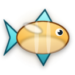
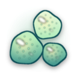
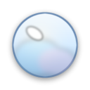
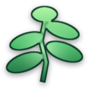
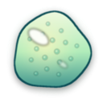
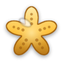
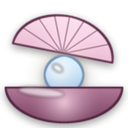
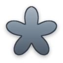
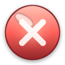
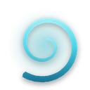

100%
0/4
0

Pressurising the dive bell…
Economic Importance of Algae · Deep Dive Expedition

0/12Fill your basket on a dive to unlock the next one.

You surfaced with every algae treasure.

Your air supply is holding steady.

Reference notes on the economic importance of algae.
Algae are simple, mostly aquatic photosynthetic organisms. They range from single-celled diatoms and Chlorella to giant kelps many metres long, and they have no true roots, stems or leaves.
The morsels that make Finn shrink are everyday manufactured goods with no algal origin — useful reminders of where the boundary sits.

Ambient MotionMusic: procedural reef synth